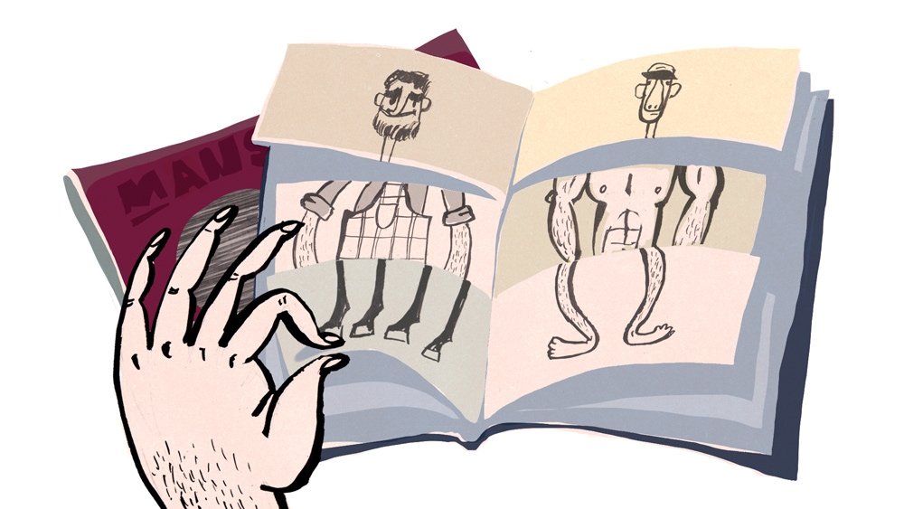

Когда маскулинность стала потенциальной темой социальных наук, оказалось, что о ней нужно говорить скорее во множественном числе. У современных мужчин на выбор есть много возможностей при манифестации своей мужественности. А к тому же и надёжный помощник.
В 2012 году фирма модной одежды Austin Reed организовала «исследование», в рамках которого женщинам предлагалось определить качества и внешний вид «Мистера Совершенство». Результаты заполонили страницы бульварных журналов и интернет-ресурсов, как вирус. И правда, кому бы не было любопытно? Так как из 30 пунктов полученной характеристики некоторые схожи, мы приведём только часть: рост 1,80, атлетическое телосложение, чёрные глаза, короткие чёрные волосы, пьёт пиво, не курит, носит стильные джинсы с майкой и свитером с v-образным вырезом, собирается максимум за 17 минут, хочет иметь семью, любит шоппинг, ест мясо, побрит (включая грудь), любит смотреть футбол, но осилит и женский сериал, водит «Ауди», закончил университет, много зарабатывает, весёлый, может быть чувствительным, если у женщины плохое настроение, признаётся в любви искренне, может сознаться, что смотрел на другую, плавает, ездит на лошади, умеет менять колёса и регулярно звонит маме. Британская газета Daily Mail решила применить критерии совершенства на практике и среди своих читателей выбрала мужчин, подходящих по всем пунктам. С фотографий в итоге улыбались хоть и симпатичные парни, но абсолютно неотличимые от толпы. Интересно, выглядела бы характеристика «правильного мужчины» по-другому, если бы её составляли мужчины?
Mike Lawn / Daily Mail
Прокладывание дорожки
В начале пути к выявлению различий между биологическим полом, с которым мы рождаемся, и социально сконструированным гендером, который приобретаем впоследствии, было проведено антропологическое исследование достаточно отдалённых друг от друга культур. Прежде всего, в первой половине ХХ века тщательно изучались общества на островах Тихого океана, которым характерно совсем другое понимание половой идентичности (они признают бесполость или третий пол), сексуального поведения (его нормативность может выражаться даже в мелочах; например, эксплицитные сексуальные шутки могут восприниматься как оскорбление или, наоборот, комплимент) и иной подход к сексуальной ориентации (во многих культурах эротическая сторона является неотъемлемой частью отношений между учителем и учеником). Океаническая трилогия Маргарет Мид «Пол и темперамент в трёх примитивных обществах» (1935) показала относительность эссенциалистской классификации на основе биологических признаков, определяющей, какое поведение считать феминным, а какое — маскулинным. Мид в конце концов начала изучать движение хиппи с их сексуальной революцией, где ничего не было свято, вследствие чего ей открылась дорога к перформативному, а стало быть ежедневно и беспрерывно осуществляемому гендеру, который в понимании Джудит Батлер определяется не тем, что у нас есть, а тем, что мы делаем.
История знания открыла один интересный факт: если мы как философы или антропологи приходим к новому концепту, то, скорее всего, некая действительность нам открывается как раз тогда, когда начинает проблематизироваться или же разрушаться. Существует мнение, что так и возникла социология: когда однозначность «общества» начала ослабевать. Подобное произошло и с мужскими исследованиями и исследованиями маскулинности в 70-х годах, когда в американских университетах появились первые дискуссионные кружки, зачатки «движения за мужскую эмансипацию». До этого времени казалось, что в отношении мужчин нечего и обсуждать. Само движение в конце концов разделилось на течение, вдохновлённое феминизмом, которому удалось не потерять связь с наукой и образовать собственную научную область, и течение, типичными представителями которого стали религиозные, иногда псевдорелигиозные, группы или защитники патриархального статуса-кво, которого избегает мужчина, понимающий рациональность своей маскулинности.
Исследования маскулинности как самостоятельная научная дисциплина
В 80-х годах одна из первых и самых известных исследовательниц маскулинности австралийская социолог Рэйвин Коннелл ввела понятие «гегемонная маскулинность». Это помогло следующим поколениям учёных (активистам, социальным работникам, так как мужские исследования являются областью изучения с практическим применением) описать то, как возникают и детерминируются культурно-доминантные образы мужественности в соответствии с различными формами маскулинности и аморфно определяемой женственности. «Натуральность» того, что какая-то модель маскулинности господствует — это такой же миф, как и то, что в западном обществе индивид может выбирать свой жизненный путь свободно.
Представление о «правильной» феминности или маскулинности зависит от контекста нашей повседневности
Очевидно, что маскулинность, предпочитаемая женщинами, которые покупают дешёвую одежду и с нетерпением ждут выхода свежего номера Pestrý svět (еженедельник о жизни звёзд шоу-бизнеса — Прим. перев.), будет немного отличаться от признанной читателями журнала Lui (модный интернет-журнал для мужчин — Прим. перев.), которые носят самые дорогие часы. «Ауди» для них, пожалуй, было бы мало, а футбол неуместен. Главный вклад мужских исследований, пожалуй, в том, что мы начинаем понимать, что наше представление о «правильной» феминности или маскулинности зависит не только от нашего пола, социального положения или образования, но и от контекста нашей повседневности, способности приспособиться к определённой ситуации и смене ролей, которые делают нашу идентичность хамелеоном, чей цвет нельзя точно установить.
Мужские исследования таким образом, благодаря неустанному утверждению, что всё относительно, в настоящее время уже вполне точная область изучения, хотя некоторые до сих пор удивляются, что гендерные исследования могут заниматься чем-то, кроме женских проблем в комбинации с карьерой и воспитанием детей. С 1998 года по сегодняшний день выходит специализированный журнал Men and Masculinities, импакт-фактору которого могли бы позавидовать его конкуренты из области социальных наук, в 2000 году стартовал амбициозный международный проект исследования маскулинности CROME, который сама Коннелл назвала «важным прецедентом для будущего», а в прошлом году при Университете штата Нью-Йорк в Стоуни-Брук (State University of New York at Stony Brook) открылся Центр мужских исследований и исследований маскулинности (The Center for the Study of Men and Masculinities) во главе с Майклом Киммелом, известным американским социологом в области гендерных исследований, и шеф-редактором Men and Masculinities. На 2017 год запланировано введение самостоятельной научной дисциплины, направленной на исследование маскулинности.
Кроме англоязычных стран, которые на данный момент доминируют в дискурсе многих областей, мужские исследования начинают развиваться и в скандинавских странах. Норвежский социолог Ёстайн Гульвог Хультер (Øystein Gullvåg Holter) в книге «Могут ли это сделать мужчины?» (Can Men Do It? 2003) обратил внимание на то, насколько важно (и осуществимо) для утверждения равенства между полами участие не только женщин, но и мужчин.
Иронические журналы
В том числе и чешские исследователи пришли к выводу, что так называемые «глянцевые журналы» представляют собой один из самых доступных источников «нормальности», а его влияние на общественное мнение довольно высоко, несмотря на снижение силы медиа. Англичане Питер Джексон, Ник Стивенсон и Кейт Брукс в книге «Как понимать мужские глянцевые журналы» (Making Sense of Men’s Lifestyle Magazines, 2001) и Дэвид Гаунтлетт в статье «Медиа, гендер и идентичность» (Media, Gender and Identity, 2002) расходятся во мнениях, удерживают ли глянцевые журналы гегемонию определённой формы маскулинности отрицанием её социальной сконструированности, или же наоборот предлагают широкий спектр вариантов, с одним из которых каждый читатель может себя идентифицировать. Но они соглашаются в том, что главную роль в изображении современного мужчины и отношении читателей к текстам о маскулинности играет ирония. Бетан Бенвелл при этом в своей работе «Маскулинность и мужские глянцевые журналы» (Masculinity and Men’s Lifestyle Magazines, 2003) делает смелое предположение, что ироничная репрезентация маскулинности, которую мы наблюдаем в глянцевых журналах, является вызовом традиционной маскулинности.

История иронии, к сожалению, ещё не до конца изученная, показывает, что этот выразительный риторический феномен возникает тогда, когда общее представление о мире начинает разрушаться. Фридрих Шлегель в эссе «О непонятностиНепонятность — термин, который Фридрих Шлегель предложил использовать, описывая ситуацию, когда ирония усложняет тот смысл высказывания, который изначально был заложен в него.» (Über die Unverständlichkeit, 1800) рассматривает иронию как «ясное осознание вечного процесса, бесконечного абсолютного хаоса». Со времён романтизма, где кроются корни старого доброго индивидуализма, который так отчаянно, но с удовольствием ставит подножку общеизвестным значениям и смыслам, ирония не считается ни видом юмора, ни риторической фигурой, но, скорее, средством для примирения с постоянно меняющимися возможностями, которые мы должны выбирать и вести себя в соответствии с ними, хоть наш выбор и может через некоторое время измениться.
Ирония как простой, но разрушительный троп, в этом случае превращается в позитивный способ преодоления экзистенциального хаоса. Семиотический анализ иронии, содержащейся в текстах глянцевых журналов, показывает, что она имеет своё преимущество и в отличие от таких категорий, как «пониженная эмоциональность», «стремление к конкуренции» или «антифеминность», отражает повседневное поведение мужчин и является средством, которое они чаще всего используют.
Высмеивание мужских стереотипов, игра с требованиями и правилами здесь не значат отказ от главенствующего идеала. Социальное поведение постоянно ставится под сомнение, но тем самым подтверждается верность норм. То, что сегодня мы воспринимаем мужчин, которые берут декретный отпуск, присматривают за больными родителями или выбирают традиционные «женские» профессии (стюардесса, медсестра), как правильных «других», «новых» или «альтернативных», ещё не значит, что идеал мужчины-борца или мужчины-кормильца утратил влияние. Снова возникает старая правда о том, что норма остаётся нормой, пока мы её не замечаем.
Традиционный мачо
В январском выпуске журнала Maxim вышла статья под названием «Движение за мужской завтрак! Зёрна оставьте курам», где одним предложением почти удалось собрать всю суть «правильной маскулинности»: «Плотный завтрак после качественного утреннего секса или безупречной тренировки по боксу — основа спокойно прожитого дня». Обжорство — это сексуальная продуктивность и культурно контролируемая агрессия. В более широком смысле оно может означать, что мужчине позволительно немного злоупотреблять алкоголем и другими веществами, вызывающими зависимость (настоящий парень ей не поддастся), а возбуждать его способны не только красивая задница, но и шикарный мотоцикл. Бывает, что это совмещается, как например, на сайте silnicnimotorky.cz (информационный портал обо всём, что связано с мотоциклами — Прим. перев.): «Мчишься полдня по просёлочным дорогам, а тебе всё мало. Не думаешь, что заблудишься, что поблизости ни одного шоссе, хочешь слиться с двигателем. Ходовая часть жёсткая, но удобная. Идёт ровно, и ты всё видишь. Чувствуешь неровности, но не боишься их. Впереди бугорок. «Лишь немного качнёт», — подумаешь». Только ли о езде на мотоцикле здесь говорится?
Эксперт в области образования из Окленда Луиза Аллен при исследовании новозеландских подростков и альтернативной модели так называемой «романтической маскулинности» замечает, что «секс объединяет не только партнёров, но и концептуальные противоречия». Хотя романтическая маскулинность содержит такие элементы, как эмоциональные связи, чувствительность к эмоциям другого, стремление к заботе и опеке, которые не могут быть признаками гегемонной маскулинности, Аллен показала, что на практике романтическая маскулинность всё же не противоречит традиционной модели мачо, а благодаря иронии может оказаться даже её товарищем. Способность быть привлекательным для женщин, приняв несколько смягчённый идеал мужчины, проявляется и в рамках доминирующей маскулинности, когда сексуальная привлекательность является ключевым моментом. Ставка на альтернативные формы маскулинности в конечном счёте ведёт к утверждению традиционных представлений о мужественности.
Ирония позволяет из современной маскулинности сделать винегрет, подходящий каждому. А ироничная нотка разрешает использовать привлекательную тему маскулинности тем медиа, которые упорно стараются не подпасть под определение «бульварных». На сайте Britské listy (культурно-политические новости — Прим. перев.) в 2008 году вышла занимательная статья под названием «Мужчины в присутствии красивых девушек ведут себя как дураки», которая под маркой «учёные доказали» информировала читателей, что при общении с миловидными девушками мужской интеллект слабеет, а причина в том, «что мужчины пытаются использовать как можно больше функций своего мозга, чтобы произвести впечатление, поэтому у них не остаётся интеллектуального потенциала для решения других задач». Вероятно, поводом к публикации этого текста была сознательная самокритика со стороны редакции, которая редко принимает во внимание женский взгляд, или насмешка, адресованная рациональному и уверенному в себе племени, неспособному обойтись без осознания надёжности собственных суждений. В любом случае, текст вызвал резонанс. До него утверждение, что гетеросексуальные мужчины ловят красивых женщин в ловушки было более-менее эссенциалистским и универсальным.